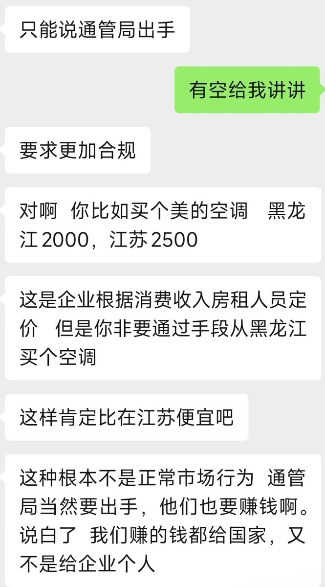
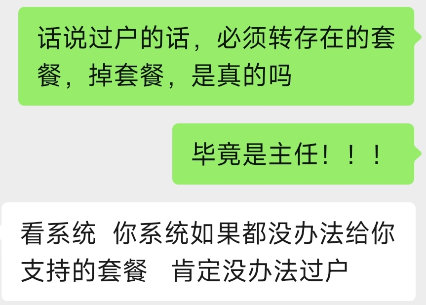
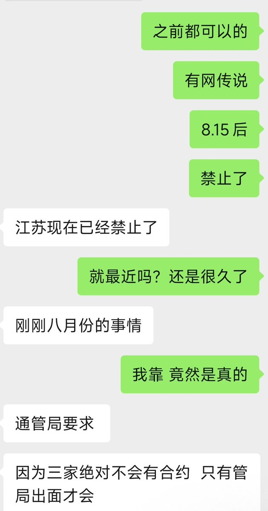

今晚问了下卡商套餐过户收紧和优惠流量卡下架的问题，他们给出的猜测是防“窜货”的逻辑，并指出低价套餐是给部分经济不好地区的福利。不过我认为，若是运营商真想限制，直接限制出省使用、然后搞省外漫游，回到提速降费前的样子就行了吧🫣
先从号卡贩子的角度说吧，他们认为大流量卡下架原因，是各省套餐本来就是按本地情况差异化定价。不少人跨地区过户薅别的省份低价套餐，属于绕开市场规则，现在监管要求整改，在当地还是可以办，只是网上不让了。这就很有矛盾点了，异地卡钱是归属地拿，但是你用的是当地的基站。而白天提到过户这个事情，其实部分地区8月开始执行了，这个事情也是管局出面整的。好套餐都给北京了，京爷最贫困是吧🤣
长期以来，新老用户套餐不同权的问题存在了很久，但是最近又被搬出来上热搜，说到底本质还是收割。
现在已经到了除了房子不涨价，万物涨价的阶段了，连洋垃圾内存、硬盘都涨，后面关于生活息息相关都会慢慢涨价！
以前有房地产撑着，现在房价大跌了，窟漏得补呀。刚开始国行的手机没有WiFi，这么快就忘了？ 归根结底两个字，缺钱。

先从号卡贩子的角度说吧，他们认为大流量卡下架原因，是各省套餐本来就是按本地情况差异化定价。不少人跨地区过户薅别的省份低价套餐，属于绕开市场规则，现在监管要求整改，在当地还是可以办，只是网上不让了。这就很有矛盾点了，异地卡钱是归属地拿，但是你用的是当地的基站。而白天提到过户这个事情，其实部分地区8月开始执行了，这个事情也是管局出面整的。好套餐都给北京了，京爷最贫困是吧🤣
长期以来，新老用户套餐不同权的问题存在了很久，但是最近又被搬出来上热搜，说到底本质还是收割。
现在已经到了除了房子不涨价，万物涨价的阶段了，连洋垃圾内存、硬盘都涨，后面关于生活息息相关都会慢慢涨价！
以前有房地产撑着，现在房价大跌了，窟漏得补呀。刚开始国行的手机没有WiFi，这么快就忘了？ 归根结底两个字，缺钱。



今晚问了下卡商套餐过户收紧和优惠流量卡下架的问题，他们给出的猜测是防“窜货”的逻辑，并指出低价套餐是给部分经济不好地区的福利。不过我认为，若是运营商真想限制，直接限制出省使用、然后搞省外漫游，回到提速降费前的样子就行了吧🫣 https://t.co/BsNDcosdGX